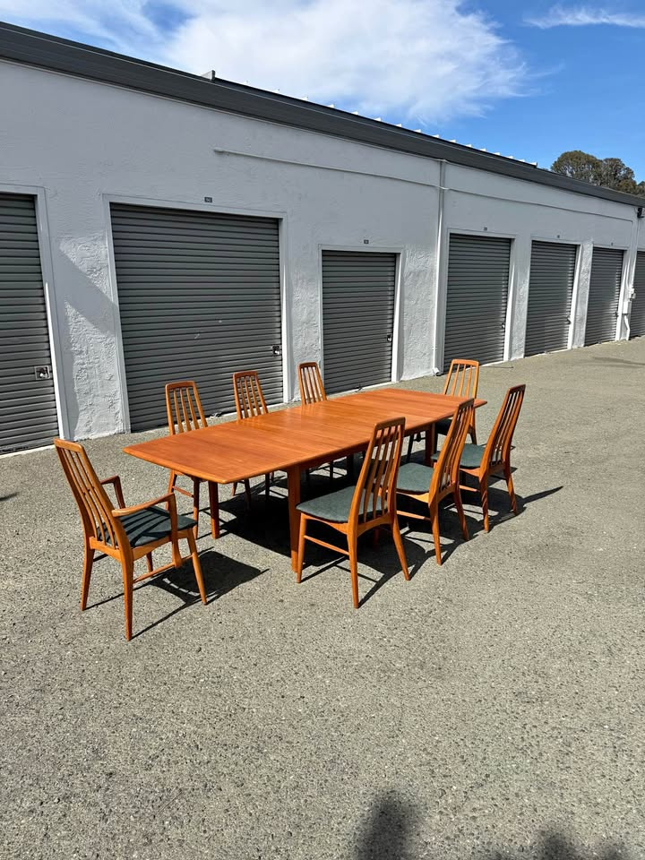
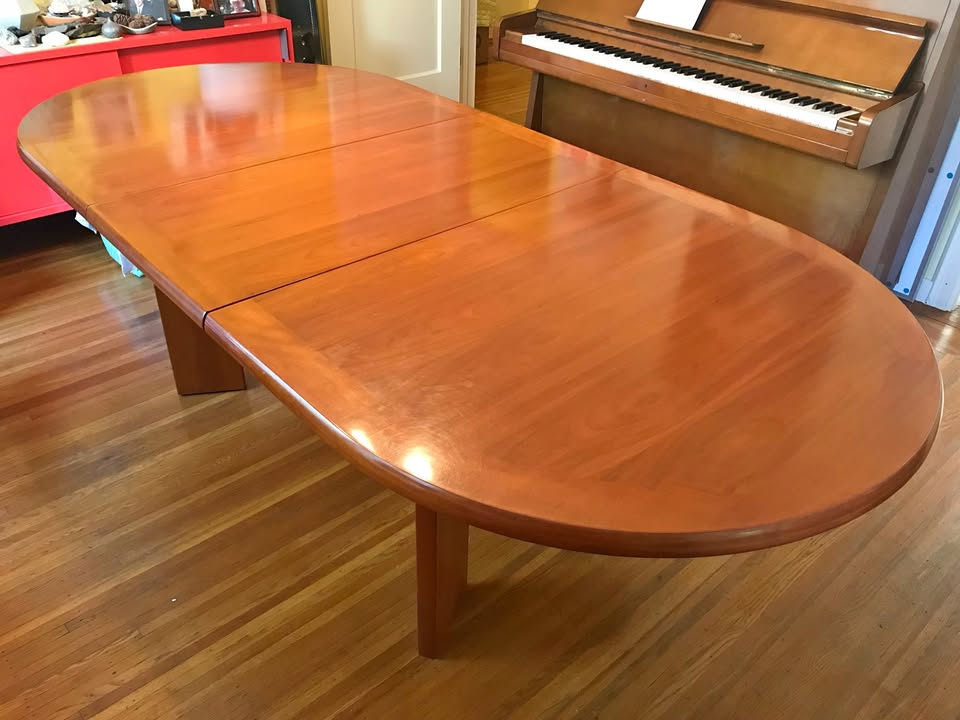
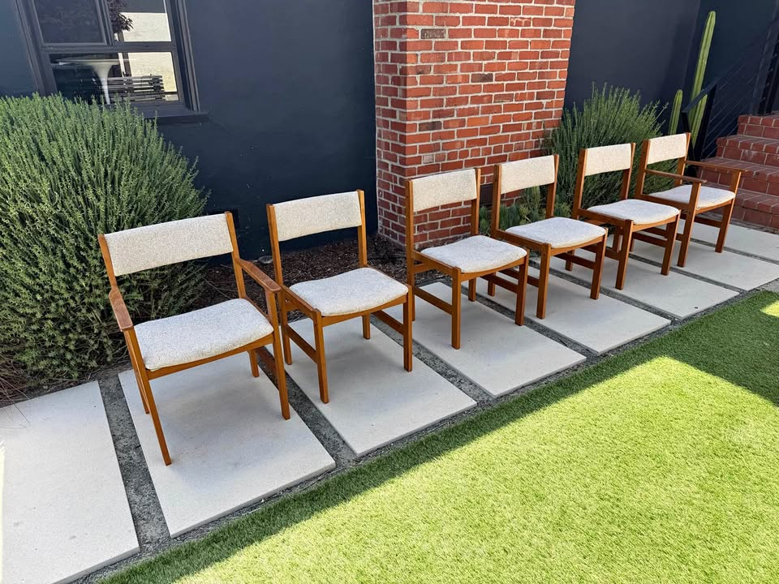

⚡ Look at right away
- 🚨 Two picks died over the long weekend — both of them cheap four-leg Danish tables. The Petaluma $795 (93", like-new, probable Ansager) now redirects to "product unavailable", and the SF $850 self-storing is explicitly marked Sold. That is now seven sub-$900 Danish tables lost inside days of posting. The rule stands: at this price, same-day or not at all.
- 🌟 The San Rafael Ansager $800 survived the weekend and is now the best cheap table left. Re-opened just now: still live, still $800. Stamped and labelled Ansager Møbler, four square tapered legs, two integrated pull-out teak leaves, photographed fully extended. Five days up now — by this board's pattern that is well into borrowed time. View listing
- ⚠ One caveat got worse, not better. The Ansager's extended length is still not stated, and the Petaluma seller — who owned an identical table and measured it at 93" — has now taken his listing down. The 93" figure is still the best estimate, but the corroborating listing is gone. Ask this seller for the open length before you drive.
- 🆕 New in budget: a Walnut Creek Danish teak draw-leaf at $550. 48⅓" → 87" extended, solid teak tapered dowel legs, leaves nestle under the top. Listed four days ago, "used – fair" with scratches and scuffs. The one real reservation is width: at 32¼" deep it is the narrowest table on the board. View listing
- 🚚 And a chairs breakthrough: seven teak chairs for $250 in Sausalito. Benny Linden, Danish-modern style, spindle backs, ~$36 a chair — a fifth of the Berkeley set's price and the first set larger than six this search has found. See the Chairs tab.
- Everything else re-verified live in a real browser this run: Redwood City Skovby $1,600, Richmond $1,395, Palo Alto $580, San Rafael $600, SF Ansager $950, SF Ansager XL $1,700, Oakland Skovby $1,200, Emeryville $950, and both standing chair sets — all unchanged in price, all still active.
Budget $1,000–$2,000 (table alone) · extends to ≥84" · Danish teak/walnut/rosewood · four legs (no pedestal/trestle)
Tables · in budget

🏆 #1 — Skovby · 102½" · six chairs included
Skovby Walnut Extendable Dining Table + 6 Chairs
$1,600 (table + 6 chairs — table alone ~$700–$1,000)
★★★★★5 / 5 value
A Skovby — a priority Danish maker — reaching 102½" on four clean square tapered legs, plus six chairs, for $1,600. Subtract the chairs at $100–200 each and the table lands around $700–$1,000. It is still the only listing that answers the table question and the chairs question in the same trip, from a named Danish workshop.
Maker/origin: Skovby — Danish (priority maker) · Redwood City, CA (Peninsula, ~40 min; dealer PlaceMakers Inc, San Carlos, weekdays 8–4) · listed 4 days ago
Size: 55" long × 35½" wide × 28½" high → 102½" extended on two pull-out extension sections in matching wood (seats 10–12 open)
Base: four square tapered legs — clearly visible in the listing photo, classic Danish, no pedestal or stretcher · Condition: used – good; wear consistent with age and use; the seller notes the chairs have some staining
✓ Clears every rule: priority Danish maker, matching-wood pull-out leaves (not metal), four tapered legs (not pedestal/trestle — visually confirmed), extends to 102½" (18½" past the 84" floor), in budget even before the chairs are netted out, click-verified active this run. ⚠ Two things to check in person: the listing says "walnut-toned wood" rather than solid walnut — ask whether the top is solid or veneered; and the chair upholstery is stained, so budget for recovering six seats if you want them perfect.
View listing →

🌟 #2 — stamped Ansager for $800 · call first
Ansager Møbler Danish Teak Extendable Dining Table
$800
★★★★½4.5 / 5 value
A labelled and stamped Ansager Møbler — the priority Danish maker — for $800, photographed fully extended on four square tapered legs. The seller notes these fetch $4,000 restored. With Petaluma gone this is the cheapest genuinely-Danish table left, and the only stamped priority maker under $900. It would be a flat 5/5 if the listing said how long it actually gets.
Maker/origin: Ansager Møbler — foil label reads "6823 Ansager · Made in Denmark · Original product from Ansager", with the underside stamped 00944 3613 (priority maker) · San Rafael, CA (North Bay, ~35 min) · posted Aug 28, live through Sep 27
Size: not stated — two integrated pull-out extension leaves that store beneath the main tabletop; photographed fully open. Ansager tables of this exact pattern run 54" closed with 19½" leaves, i.e. ~93" extended — but the Petaluma seller who measured an identical one has now delisted, so that corroboration is gone
Base: four square tapered legs — visually confirmed in both the closed and extended photos; no pedestal, no trestle, no stretcher · Condition: good — the seller states typical surface wear and prices accordingly; the top shows honest use · delivery available
✓ Clears the hard rules: solid Danish teak by a stamped priority maker, matching-teak pull-out leaves that self-store (not metal), four tapered legs (not pedestal/trestle — visually confirmed), in budget at $800, click-verified active this run on both Craigslist and Marketplace. ⚠ The extended length is still unconfirmed — treat the 84" floor as unverified until the seller gives you a number. The top also has real surface wear, so budget an oiling or a light refinish. Five days up in a tier that usually clears in three: call, don't message.
View listing →

#3 — 104" and nothing left to do
Danish Teak Butterfly Extension Dining Table
$1,395
★★★★½4.5 / 5 value
Danish teak that reaches 104" on tapered solid legs, completely restored and refinished — and photographed fully open with eight chairs around it, so you can see it working. The best turn-key table here, and unlike the bargain tier it has sat a week without vanishing.
Maker/origin: Danish modern teak — no maker's stamp named · Richmond, CA (East Bay, ~25 min) · listed a week ago
Size: 64" × 41" closed → 104" extended on two butterfly leaves that store inside the table (each adds 20"; comfortably seats 10, photographed with 8) · 29" high
Base: four tapered solid-wood legs — stated in the listing and clearly visible in the extended photo; legs come off for transport · Condition: used – good; completely restored and refinished, described as solidly built and heavy · delivery available for a fee
✓ Clears every rule: solid Danish teak, matching-teak butterfly leaves that self-store (not metal), four tapered legs (not pedestal/trestle — visually confirmed in the fully-extended photo), extends to 104", in budget at $1,395, click-verified active this run. Knocks: no named maker, and 64" closed is longer than most of these — measure the everyday footprint, not just the extended one. Matching Danish chairs are sold separately by the same seller.
View listing →

#4 — the cheapest whole room
Vintage MCM Teak Dining Set — Table + 6 Chairs
$580 (table + 6 chairs)
★★★★★5 / 5 value
A full solid-teak set — table plus six matching teak chairs — for $580, on four clean tapered legs. Since the budget is for the table alone, six chairs (worth ~$600–1,200) come essentially free. Only the 87" extension keeps it out of the top two.
Maker/origin: Vintage Danish-style teak (unbranded) · Palo Alto, CA (Peninsula, ~45 min) · live through Sep 12
Size: 51" closed → 87" extended on a matching-teak pull-out draw-leaf (seats 6–8) · 33" deep · 29" high
Base: four tapered legs — confirmed in listing photos · Condition: excellent; no damage, deep scratches or water rings; smoke/pet-free home; delivery available
✓ Clears every rule: solid teak, matching-wood pull-out leaf (not metal), four legs (not pedestal/trestle — visually confirmed), extends to 87" (past the 84" floor), far under budget, click-verified active this run. Only knocks: unbranded, and 87" is joint-shortest of the picks — eight seats would be snug, and 93" tables still start around $600 on this board.
View listing →

#5 — Made in Denmark · holding at $600
Vintage Danish Modern Teak Extension Table
$600 (was $800)
★★★★½4.5 / 5 value
A stamped Made in Denmark teak extension table that opens to 93", holding at $600 into a sixteenth week. It slips behind the cheaper picks only because the workshop is unnamed and the top has more visible wear.
Maker/origin: Danish Modern, Made in Denmark (unnamed workshop) · San Rafael, CA (North Bay, ~35 min) · listed 15 weeks ago
Size: 53" × 35" closed → 93" extended on matching-teak pull-out leaves (seats 8–10) · 29" high · 25¼" chair clearance under the apron
Base: four legs — confirmed in listing photos · Condition: used – good; solid and sturdy; some darker spots and light top wear consistent with age
✓ Clears every rule: solid teak with teak veneer, matching-wood leaves (not metal), four legs (not pedestal/trestle — visually confirmed), extends to 93", far under budget, click-verified active this run. Only knock: the darker spots and surface wear on the top are more visible here than on the other picks — and after sixteen weeks unsold, there is almost certainly room under $600.
View listing →

🌟 #6 — NEW · 87" of Danish teak for $550
Mid Century Draw-Leaf Dining Table — Danish Teak
$550
★★★★4 / 5 value
The cheapest table-only pick on the board, and it clears the length gate: 87" extended, solid Danish teak, matching leaves that nestle under the top, four tapered dowel legs. Two things hold it at four stars rather than five — it is honestly described as "fair", and at 32¼" deep it is the narrowest top here by three inches.
Maker/origin: Danish teak draw-leaf — no maker's stamp named (dealer @walnutcreekmodern) · Walnut Creek, CA (East Bay, ~35 min) · listed 4 days ago · door pickup
Size: 48⅓" long → 87" extended · 32¼" wide · 29" high · leaves nestle under the main tabletop
Base: four solid teak tapered dowel legs — stated in the listing and visible in the photo; no pedestal, no trestle, no stretcher · Condition: used – fair; structurally sound, with some scratches and scuff marks · first come, first served
✓ Clears the hard rules: solid Danish teak, matching-teak nesting leaves (not metal), four tapered legs (not pedestal/trestle — visually confirmed), extends to 87", well under budget, click-verified active this run. ⚠ Two real reservations: 32¼" is narrow — measure a place setting plus a serving dish before you commit; and "fair" is the weakest condition grade on the board, so see the top in person or ask for raking-light photos. At $550 there is room in the budget for a refinish.
View listing →

#7 — the no-work Ansager
Danish Modern Teak Draw-Leaf by Ansager Møbler
$950
★★★★4 / 5 value
A confirmed Ansager Møbler, freshly refinished to like-new and extending to 93" — with its dimensions actually stated, which the San Rafael one still lacks. You are paying $150 over San Rafael to skip the refinish and remove the length question.
Maker/origin: Ansager Møbler — "Made in Denmark" (priority maker) · SF Mission District (~35 min) · live through Sep 11
Size: 53" × 35½" → 93" extended on two hidden matching-teak draw-leaves (each +20"; seats 6 closed, 10 open) · 29" high
Base: four straight legs — confirmed in the listing photos (legs unbolt for transport) · Condition: like-new, newly refinished (hand-rubbed oil); SF delivery $50, Bay Area $60+
✓ Clears every rule: Made-in-Denmark solid teak by a priority maker, matching-teak draw-leaves (not metal), four legs (not pedestal/trestle — visually confirmed), extends to 93", in budget, click-verified active this run. Knocks: the two stored leaves are a slightly lighter hue than the top (common on draw-leaf tables), and for $750 more the same seller's XL reaches 112" and is 48" deep — worth seeing both in one visit.
View listing →

#8 — the biggest table on the board
Danish Modern XL Teak Draw-Leaf by Ansager Møbler
$1,700
★★★★4 / 5 value
A fully refinished Ansager Møbler in a size that simply doesn't come up: 72" × 48" closed, 112" extended. Still the largest and deepest here — and now the most expensive pick, since the sub-$900 tier keeps selling out from under it.
Maker/origin: Ansager Møbler — "Made in Denmark" (priority maker) · SF Mission District (~35 min) · posted Aug 20, live through Sep 19
Size: 72" × 48" closed → 112" extended on two hidden matching-teak dutch draw-leaves (seats 12+) — the deepest top here by 12–13"
Base: four solid teak legs, tapered — the listing calls them rounded; the photos read as square-section, either way four corner legs with no pedestal or stretcher; legs are removable for curbside pickup · Condition: excellent — completely refinished with a hand-rubbed oil finish · SF delivery $50, Bay Area $60+
✓ Clears every rule: Made-in-Denmark solid teak by a priority maker, matching-teak draw-leaves (not metal), four legs (not pedestal/trestle), extends to 112", in budget at $1,700, click-verified active this run. Worth thinking about before you drive: 112" × 48" is a big table — measure the room, and confirm 48" deep works with your chairs. Same seller also has multiple sets of Danish teak chairs.
View listing →

#9 — Skovby, 110", but read the caveat
Skovby Danish Cherrywood Expandable Dining Table
$1,200
★★★½3.5 / 5 value
On paper this is excellent: a Skovby that reaches 110" with both leaves stored flat inside, for $1,200. The rating is held down by the look, not the specs — and the Redwood City Skovby offers the same maker on tapered legs in teak-toned walnut.
Maker/origin: Skovby — Danish-made (priority maker) · Oakland, CA (East Bay, ~25 min) · door pickup
Size: oval, 70" → 90" with one leaf → 110" with both · 42" wide · two 20" matching-wood leaves stored flat inside the table, released by pulling the ends apart
Base: four legs, inset from the table edge so they don't interfere with chairs — but they are wide flat slab legs, not tapered rounds · removable with the hex key stored in the leaf tray · Condition: used – good; warm cherry finish, described as sturdy/great quality
✓ Clears the hard rules: solid Danish wood by a priority maker, matching-wood self-storing leaves (not metal), four legs (not a pedestal and not a trestle — stated in the listing and visible in the photos), 110" extended, in budget, click-verified In stock this run. ⚠ But look at it before you love it: the oval top + wide slab legs + high-gloss cherry is exactly the boardroom look you've been ruling out, and cherry is not teak or walnut — it will not sit next to Danish teak chairs the way the other picks will.
View listing →

#10 — 94", but see the caveats
Vintage Danish Teak MCM Expandable Dining Table
$950 (listing text still says "asking $1,250")
★★★3 / 5 value
Honest Danish teak at 94" extended — but you're buying largely on trust. Six weeks on and there is still no photograph of it assembled, no maker mark, and the listing quotes two different prices.
Maker/origin: Vintage Danish modern teak; the brand field reads generically "Century" — no maker's stamp shown anywhere · Emeryville, CA (East Bay, ~25 min) — dealer with 359 ratings; delivers around the Bay Area, Napa, Sonoma and Lake County
Size: 54" × 40" closed → 94" extended · 29" high
Base: four corner legs with an apron — confirmed from the disassembly photos (no pedestal, no trestle stretcher) · Condition: stated excellent vintage; only three photos, all of the table taken apart on a lawn
✓ Clears the hard rules: solid teak, matching-wood leaf, four legs (visually confirmed), 94" extended, and in budget at either quoted price. ⚠ Three things to settle before you drive: the header says $950 while the description still says "Asking $1250"; there is no assembled photo, so fit, finish and how well the extension runs are unverified; and there's no Danish maker's stamp. Ask for a photo of it set up and a firm price.
View listing →
How they compare in one line each: Redwood City Skovby $1,600 — priority maker, 102½", tapered legs, six chairs thrown in. San Rafael Ansager $800 — a stamped priority maker for $800, if the length checks out. Richmond $1,395 — 104", restored, nothing to do. Palo Alto $580 — cheapest whole room, but only 87". San Rafael $600 — Made in Denmark, 93", more top wear. Walnut Creek $550 — 87" of Danish teak at the lowest price here, but narrow and "fair". SF Ansager $950 — pay up and skip the work. SF Ansager XL $1,700 — the biggest, 112" × 48". Oakland Skovby $1,200 — great specs, boardroom looks. Emeryville $950 — ask for an assembled photo first.
Gone this run: the Petaluma $795 (93", like-new, probable Ansager) — listing now redirects to "product unavailable"; it was #2 on this board. The SF $850 self-storing (93", OBO) — now explicitly marked Sold. Both were four-leg Danish tables under $900, and both lasted days rather than weeks.
New DQs this run: D-Scan teak, SF ($1,300, just listed) — 42" round, only 62" with its one leaf. Vintage Danish teak oval ($1,500, cut from $1,950, SF) — 78½" fully open on a single leaf. Mid-Century teak + 4 chairs ($800, cut from $1,000, Oakland) — 76" fully extended. Stanley "Walnut" drop-leaf + 6 chairs ($850, SF, new arrival) — American maker, drop-leaf. 1970s MCM teak draw-leaf ($450, Fremont) — made in Singapore, "4–6 seats", no dimensions. Ansager Møbler square draw-leaf ($650, Walnut Creek) — priority maker, still only 67" fully extended.
Ruled out (standing): E. Valentinsen rosewood ($1,175, Walnut Creek) — twin-pedestal. Gudme Møbelfabrik rosewood ($700, SF) — twin-pedestal. SF "Danish mid century modern extendable" ($700 and $725) — pedestal, stated in the title. Vejle Stole Møbelfabrik ($1,995, SF) — priority maker but only 76" extended. Dyrlund teak oval ($1,750, Hayward) — ceramic-tile top. Sonoma Skovby ($800) — twin cylindrical pedestal, peeling veneer. Sacramento teak ($825) — trestle base, 72" fixed. John Keal walnut ($975, Santa Rosa) — round on a slatted pedestal. Benny Linden table ($1,750, Sacramento) — outside the drive radius. Richmond teak-and-oak ($1,075) — still no dimensions, unrankable. SF "Teak Dining Table with Pull Out Leaves" ($1,695) — 83", one inch short. SF butterfly-leaf teak ($1,680) and SF oval ($1,450, McIntosh) — U.K. imports. Roseville teak ($1,500) — no maker, no dimensions, ~2 hours out. Millbrae ($799) — 100" but arched trestle base. Los Gatos ($1,000) — 78". El Cerrito ($1,150) — two separate gate-leg tables. Fremont ($550) — made in Singapore. Novato built-in-leaf ($1,750) — trestle. Albany draw-leaf ($1,000) — 67". Gangsø teak ($850, SF) — ~63". Alameda ($1,250) — 72" max, laminated top. Stockton chevron-top sets ($1,250 and $1,255) — parquet tops, not Danish, ~1½ hours out. Sacramento teak ($680) — outside the drive radius. Castlery "Seb" ($900, San Jose), West Elm ($200) and Crate & Barrel "Tate" ($1,000) — current-production retail, not vintage Scandinavian. Oakland oval ($1,750), Refinished Skovby ($2,950), San Jose "large conference" teak ($2,999), Sonora sunburst ($2,000, round), Børge Mogensen drop-leaf ($3,200), Stickley walnut ($3,500), and SF tables at $2,200, $2,450, $2,500 and $2,800 — over budget. Heywood-Wakefield ($895) — American. Meredew, McIntosh, Nathan, Remploy, G-Plan and other UK imports.
Watchlist: the Gudme Møbelfabrik walnut expandable, $2,050 (Folsom — priority maker, 63¼" → 101½", original table pads, delivery included, $50 over the ceiling) sits outside the 40-mile Marketplace radius and the SF Bay Craigslist region, so it still cannot be re-verified from here. Last seen unchanged at $2,050, listing running to ~Sep 11. If it matters, search Marketplace from a Sacramento location by hand.
⚡ Chairs — quick read
- 🌟 The big news: seven teak chairs for $250 in Sausalito. Benny Linden, Danish-modern spindle backs, cushioned seats, used–good. That is ~$36 a chair — a fifth of what the Berkeley six cost per seat, and the first set bigger than six this search has turned up. Sausalito is ~25 minutes. At that price it will not sit.
- 🏆 The #1 table still comes with six chairs. The Redwood City Skovby, $1,600, re-verified unchanged: a table and six chairs in one pickup from a named Danish maker. The chairs are stained, so budget ~$200–300 to recover the seats.
- Seven plus one is a real path to eight. Benny Linden chairs are common and cheap; finding a single matching eighth — or living with seven around a 93" table — is now the most realistic route to a full room this search has offered.
- 💭 Still no set of eight. Five runs since the D-Scan eight sold. A set of four Henning Kjærnulf for Vejle chairs appeared this run in Richmond at $900 — a genuine priority Danish maker, but $225/chair and only four, so it is not on the board.
- Worth asking: the Richmond $1,395 table is photographed with eight Danish teak chairs around it, and the listing says chairs are sold separately on another post. Message that seller for the price — it remains the closest thing to a matched set of eight.
Budget $1,200–$2,400 for six · MCM teak/walnut that coordinates with the table · easy, clean fabric · driveable / delivers
Chairs · sets of 6+ · in budget

🌟 NEW · seven chairs, ~$36 each
7 Benny Linden Teak Dining Chairs — Set of 7
$250 (set of 7)
★★★★½4.5 / 5 value
Seven teak chairs for $250 — ~$36 a chair — with tall sculptural spindle backs, tapered legs and plain cushioned seats. It is the cheapest seating this search has ever found by a wide margin, and the only set above six. The single reason it isn't 5/5 is the same one that dogs the Berkeley set: Benny Linden is Danish-modern style, not a Danish workshop.
Maker/origin: Benny Linden — Danish-modern style, teak; not Danish-made · Sausalito, CA (North Bay, ~25 min) · listed a week ago · public meetup or door dropoff
Count/fabric: 7 chairs (side chairs) · tall vertical-spindle backs, rounded rails, tapered legs · pale neutral cushioned seats
Condition: used – good; the seller describes warm teak tones and clean lines, and photographs all seven together
✓ Best price per seat on the board by a factor of three, warm teak that will sit happily next to any of the teak table picks, and seven chairs — one short of the room rather than two. ⚠ Two caveats: not a Danish maker, so it won't match a Skovby or Ansager on provenance; and seven is an odd number — plan either to find a matching eighth (Benny Linden turns up often) or to run seven around a 93" table. At $36 a chair, go look before you think about it.
View listing →

Six, upholstered, ready to use
Set of 6 Danish-Style Teak Dining Chairs by Sun Furniture
$750 (set of 6, was $950)
★★★½3.5 / 5 value
Six teak-framed chairs — two with arms, four without — at $125 each, in exactly the plain oatmeal fabric this room wants. It loses a star this run for a simple reason: the Sausalito set offers seven teak chairs of the same provenance tier for a third of the money.
Maker/origin: Sun Furniture — Danish-modern style, not Danish-made · Berkeley, CA (East Bay, ~25 min) · listed 8 weeks ago
Count/fabric: 6 chairs (2 arm + 4 side) · upholstered seats and backs in a plain oatmeal weave — already the clean, quiet look, no recovering needed for style
Condition: used – good; frames sound · the seller states "some stains on the upholstery seats"
✓ Upholstered backs and arms make these more comfortable than the Sausalito spindles, the plain fabric coordinates with every table pick, and eight weeks unsold after a $200 cut means there is room to negotiate. ⚠ Three caveats: not a Danish maker; the stains mean either seeing them in person or budgeting ~$200–300 to recover six seats; and at $125/chair it is now the most expensive per seat of the non-Danish options.
View listing →

✓ Zero work needed
Six Danish Modern Teak Dining Chairs
$1,000 (set of 6)
★★★★4 / 5 value
Two captain's chairs plus four sides in solid teak with sculpted arched backs, already reupholstered in fresh fabric — no recovering project. $167/chair is the most here, but these are the only genuinely Danish chairs on the board, and it's the same seller as both SF Ansager tables.
Maker/origin: Danish Modern solid teak (unbranded) · SF Mission District (~35 min) — same seller as the SF Ansager tables
Count/fabric: 6 chairs (2 captain's with arms + 4 side) · newly reupholstered in purple fabric · hand-rubbed teak oil finish
Size: 20" wide (22" arm chair) × 20" deep × 40" high · 18½" seat height · Condition: excellent; strong and sturdy · SF delivery $50
✓ Solid teak, excellent condition, no upholstery work needed, genuinely Danish, and one-stop pickup if you take either SF Ansager. ⚠ Two things to weigh: the new fabric is purple — clean and plain, but a colour you'd be inheriting — and six chairs won't fill a 93–112" table the way eight will.
View listing →
The trade-off in one line: Sausalito, $250 buys seven teak chairs for less than the cost of recovering the Berkeley six — it is the obvious first call, with the caveat that they are Danish in style only. Berkeley, $750 is the comfortable upholstered option if you want arms and backs. SF, $1,000 is the only actually-Danish set, already done, in purple. And the Redwood City Skovby still bundles six with a 102½" priority-maker table.
Two leads worth a message: the Richmond $1,395 table seller has the eight teak chairs from the photo listed separately. The SF Ansager seller advertises multiple sets of Danish teak chairs beyond the six listed — ask whether any set of eight exists.
Seen but set aside: Four Henning Kjærnulf for Vejle Stole Møbelfabrik, 1960s ($900, Richmond) — a priority Danish maker, but only four chairs at $225 each. Set of 8 D-Scan teak ($1,000, Richmond) — sold. Four D-Scan teak chairs ($600, Santa Rosa) — gone with the $450 table. Set of 8 Danish teak, free delivery ($1,600, San Rafael) — sold / delisted. Set of 6 D-Scan teak ($1,200, Novato) — pricier per chair. Six H.W. Klein for Bramin, refinished ($2,795, Richmond) and Johannes Andersen teak 6 ($2,650) — over the $2,400 ceiling. Nathan teak 6 ($1,280, SF) — UK import. A floral-upholstered 6 ($2,400) — busy fabric.